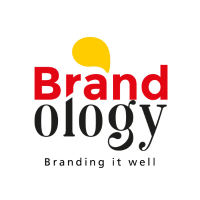
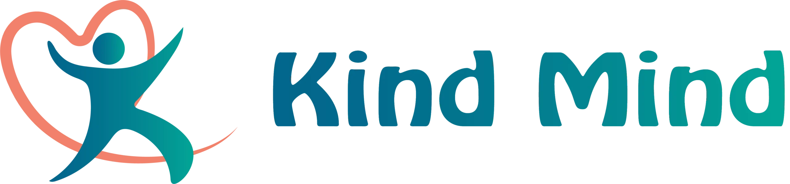
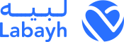
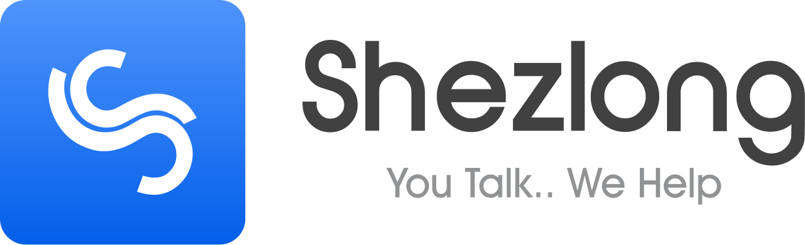
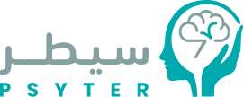
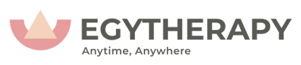

خطة 12 شهراً لـ KindMind
أنتم في مرحلة النمو. هذا ما نفعله.
ما لديكم اليوم
موقع بلغتين (عربي/إنجليزي). 12 معالجاً مرخّصاً يخدمون بثلاث لغات (عربي/إنجليزي/فرنسي حسب المعالج). أربع خدمات: فردي، زوجي، مراهقين، إرشاد أبوي. جلسات CBT و MBSR. 5 قنوات اجتماعية.
ما نبنيه معكم
نبدأ بالجالية العربية في أمريكا وكندا وفرنسا (شريحتكم الأولى، LTV الأعلى)، ثم نوسّع للخليج ومصر. ستة مسارات: SEO تقني، محتوى عربي بإشراف معالج، إعلانات Google و Meta و TikTok، يوتيوب شهري، مطابقة المستخدم بالمعالج، اختبار A/B لصفحة الحجز.
السوق ينمو. الطلب يسبق العرض.
محرّكات الطلب
- الشتات العربي: 3.7M في أمريكا + 750K في كندا + 5M+ مغاربي في فرنسا. أعلى قدرة شرائية، أقل منافسة عربية
- رؤية 2030 السعودية تجعل الصحة النفسية أولوية في الإصلاح الصحي
- دبي خصّصت $28 مليون لمبادرة "الثروة العقلية" ضمن استراتيجية الرفاه 2031
- منصة مصر الحكومية: 100 ألف مستخدم و10,767 جلسة افتراضية منذ 2022
- 60٪ من سكان المنطقة تحت سن 35. جيل يبدأ يومه بالهاتف
الطلب أكبر من العرض. هذه فجوتكم.
من سكان الخليج يعانون من أعراض نفسية
ماكنزي مسحت السعودية والإمارات والكويت وقطر في 2022. ثلثا المشاركين لديهم أعراض أو حالة قابلة للتشخيص.
حالات غير مُشخّصة في الخليج
الرقم في الدول عالية الدخل المماثلة هو 50٪. كل 100 شخص لديه حالة، 80 منهم لم يصلوا لمعالج بعد. هؤلاء عملاؤكم.
يصمتون بسبب الوصمة الاجتماعية
لا يدخلون عيادة لئلا يُرَوا. الأونلاين يحل هذا. KindMind يستهدف هذه الشريحة تحديداً.
اكتئاب إكلينيكي في مصر
أعلى من المتوسط العالمي (4. 4٪). دراسات مستقلة تضع المعدل بين 24٪ و74٪ حسب الشريحة.
من المستخدمين على منصة مصر الحكومية إناث
82٪ غير متزوجين، أغلبهم مراهقون وشباب. شريحة تصل عبر إنستغرام وتيك توك، لا فيسبوك.
عرب في أمريكا وحدها
بدون احتساب كندا (750K) وفرنسا (5M+ مغاربة). معالج عربي مرخّص يفهم سياقهم الثقافي شحيح. هذه شريحة عميل KindMind الأقوى شرائياً.
أين يقضي جمهوركم وقته؟
الجالية العربية في الشتات
السعودية
مصر
موقعكم اليوم على Google، مقابل عرب ثيرابي
kindmind.care
arabtherapy.com
ست منصات تنافسكم




كم زائراً يصل لكل منصة شهرياً من Google؟
الفائزون لا يبيعون جلسات. يبيعون ثقة.
كيف يفكر مستخدم الصحة النفسية
المستخدم لا يفاوض السعر. يفاوض خوفه: هل أنا ضعيف؟ هل سيفهمني المعالج؟ هل سيفضحني أحد؟ هل أحتاج طبيباً أو جلسة كلام؟ كل منصة نمت في القطاع تجيب عن هذه الأسئلة على الموقع قبل أن تطلب الحجز. بدون الإجابات، الإعلان يجلب زيارة، لا حجزاً.
قاعدة الفوز في خمس خطوات
- قبل الحجز: أزيلوا الخجل والشك بمحتوى وتعهدات واضحة.
- عند الاختيار: وجّهوا المستخدم. لا تتركوه أمام قائمة معالجين.
- قبل الدفع: اجعلوا الخطوة الأولى آمنة: تقييم، مكالمة مطابقة، جلسة تعريفية.
- بعد الجلسة: استمرّوا بالتواصل برسائل وتمارين، لا حجز يتيم.
- بعد إثبات الطلب: ركّزوا على رفع متوسط الجلسات. العميل الموجود أرخص بكثير من عميل جديد.
إزالة الخجل
الرسالة الأولى ليست "احجز الآن"، بل "ما تمر به مفهوم، وله طريق آمن وسري".
شرح الرحلة
ماذا يحدث في أول جلسة؟ من يرى معلوماتي؟ كيف أعرف أن المعالج مناسب؟
توجيه الاختيار
استبيان أو مكالمة مطابقة يمنع المستخدم من الضياع بين أسماء وتخصصات.
أول خطوة سهلة
تقييم، مكالمة، أو جلسة تعريفية تجعل القرار أقل مخاطرة من جلسة كاملة مباشرة.
استمرارية
تمارين ومتابعة ورسائل بين الجلسات تجعل العلاقة علاجية، لا حجزاً منفرداً.
ستة أنماط تتكرر عند المنصات التي تكسب
يحوّلون الوصمة إلى وعد خصوصية
Shezlong بدأ من احتياج عربي حساس: الناس تريد العلاج، لكنها لا تريد أن تُرى داخلة عيادة. Labayh وArab Therapy وO7 يكررون نفس الرسالة: آمن، سري، من البيت، دون إحراج.
يبنون سلّم منتجات لا زر حجز واحد
Labayh لديه تقييمات، جلسات فورية، جلسات مجدولة، برامج، مجموعات، ويبنارات، وBusiness. O7 لديه مطابقة، Rassel text-line، تقييمات، مجموعات، ويبنارات، وEmployee Benefits.
يقللون عبء الاختيار
أصعب لحظة ليست الدفع فقط؛ بل اختيار شخص غريب للحديث معه. O7 يخفف هذا بمكالمة مطابقة وتوصيتين في نفس اليوم، وShezlong يبدأ باستبيان، وTalkspace يستخدم matching بعد أسئلة قصيرة.
يجعلون الجودة قابلة للفهم
Arab Therapy يشرح المؤهلات والإشراف والمعايير، O7 يعرض فيديوهات ونبذات معالجين، Labayh يضع ترخيصاً وتخصصات وأرقام تراكم منشورة (1000+ معالج، 70M دقيقة). الجودة هنا ليست ادعاء، هي عناصر مرئية متكررة.
يصنعون الطلب قبل التقاطه
Shezlong يقاتل الوصمة بحملات توعية. Headspace/Calm لا ينتظران كلمة "علاج"؛ يدخلان من النوم، الضغط، التركيز، العادات اليومية. هذا يخلق علاقة قبل الاحتياج الحاد.
يفصلون الرعاية عن نموذج الدفع الفردي
Talkspace توسع عبر التأمين، EAP، أصحاب العمل، وشراكات مثل Amazon Health Services. Labayh وO7 يقدمان مسارات مؤسساتية. السبب بسيط: الفرد متردد، لكن الشركة لديها ميزانية رفاه واحتياج إنتاجية.
منصّة سعودية · DR 40 · 49.8K زيارة شهرية
لبيه لا يبيع جلسة. يبني منظومة ثقة محلية.
منتج متعدد المستويات
جلسات فورية ومجدولة، مجموعات دعم، برامج علاجية، ويبنارات، تقييمات نفسية، وصفات طبية، ومسار Labayh Business.
الثقة تأتي من الحجم
المستخدم يرى 1000+ معالج و70 مليون دقيقة علاج وترخيصاً محلياً، فيشعر أنه يدخل مؤسسة رعاية، لا صفحة ناشئة.
عوّضوا الحجم بالانتقاء
لا تدّعوا سعة لا تملكونها. حوّلوا الـ12 معالجاً إلى ميزة: انتقاء دقيق، إشراف واضح، تخصصات محددة، وجودة قابلة للقياس.
ترجمة الدرس لـ KindMind
في السعودية، لا ننافس لبيه بالحجم من اليوم الأول. ننافسه بالوضوح والانتقاء: صفحة ترخيص وجودة، ملف معالج تفصيلي بمؤهلات وتخصصات، اختبار توجيه، ومنتج أول خطوة بكلفة منخفضة. الحجم يأتي بعد إثبات معدل التحويل، لا قبله.
منصّة مصرية · DR 35 · 8.5K زيارة شهرية
شيزلونج فهم أن العلاج العربي مسألة ثقافة لا لغة
منصة عربية بسياق ثقافي
فيديو، رسائل، وجلسات صوتية مع معالجين عرب. خدموا مصر والسعودية والشتات بنفس الرسالة: مكان آمن، خصوصية، ومعالج يفهم العائلة والدين والعلاقات.
ثقافة لا لغة فقط
المستخدم لا يريد أن يُرى داخلاً عيادة. اللغة العربية وحدها لا تكفي. يريد سياقاً مألوفاً يفهم الوصمة والزواج والغربة دون شرح.
قسّموا حسب السياق
لا تبيعوا "ثنائية اللغة" كميزة. ابنوا مسارات: مصري، خليجي، مغترب، أم قلقة، زوجان، مراهق، محترف محترق.
ترجمة الدرس لـ KindMind
الرسالة الأقوى ليست "علاج نفسي أونلاين"، بل "تحدث مع مختص يفهم حياتك". ابنوا مكتبة محتوى تجيب الأسئلة الحقيقية: كيف أبدأ دون أن يعرف أحد؟ هل العلاج يناسب المتزوجين؟ كيف أقنع أهلي؟ هل المعالج سيفهمني كمغترب؟
منصّة إقليمية · DR 36 · 296K زيارة شهرية
عرب ثيرابي يكسب بالشفافية، لا بالحجم
الخصوصية في الواجهة
معالجون عرب مؤهلون مع إشراف وتدريب، تطبيق للحجز والمحادثة، اشتراكات واضحة، وصفحة FAQ تشرح التشفير وعدم تسجيل الجلسات.
الوضوح يبرّر السعر
الخوف الأكبر في العلاج الأونلاين هو الخصوصية والاستغلال. حين يرى المستخدم آلية الجودة مكتوبة، يقل خوف الدفع ويزداد قبول السعر.
اصنعوا صفحة الجودة
صفحة "كيف نضمن جودة الرعاية؟" تجيب عن أربعة أسئلة: من يراجع المعالجين؟ كيف نُدير الحالة؟ متى نُحيل لطبيب؟ كيف نحمي البيانات؟
ترجمة الدرس لـ KindMind
اكتبوا "نظام الجودة" قبل ما تطلبوا الحجز. أربع صفحات أساسية: (1) كيف نختار المعالج، (2) ما الذي يحدث في الجلسة، (3) ماذا نفعل ببياناتك، (4) متى نحيل لطبيب. هذه الصفحات تفعل ما يفعله إعلان مدفوع: تخفّض حاجز الثقة قبل أن يدفع المستخدم دولاراً.

منصّة مصرية · مطابقة بشرية · Rassel
O7 لا يتركك تختار وحدك. يُطابقك.
مطابقة بشرية مفسّرة
مكالمة مطابقة مع مختص، توصيتان في نفس اليوم مع سبب الترشيح، فيديوهات تعريفية للمعالجين، خدمة Rassel للدعم النصّي بدون موعد، ومجموعات وتقييمات وويبنارات.
التوجيه يرفع التحويل
القلق يجعل الاختيار مرهقاً. حين يقدّم لك أحدهم اختيارين بسبب واضح، تتخذ القرار. قائمة طويلة من 100 معالج تُجمّد المستخدم أكثر مما تساعده.
اختبار قصير + توصيتان
5–7 أسئلة تنتج توصيتي معالج مع سبب الترشيح. هذه الخطوة وحدها قد ترفع التحويل أكثر من إعلان جديد. ثم رسائل بين الجلسات لربط الزيارات ببعضها.
ترجمة الدرس لـ KindMind
ابنوا "Matching Flow" من 5 إلى 7 أسئلة عن الحالة واللغة والتفضيل، ثم توصيتان لمعالجين من فريقكم مع شرح "لماذا هؤلاء". أضيفوا رسالة متابعة بعد 24 ساعة من الجلسة الأولى. هذان التغييران يرفعان التحويل دون زيادة ميزانية الإعلانات.
العالميون: التوزيع أقوى من الإعلان
توزيع متعدّد الأبواب
Talkspace يربط therapy + psychiatry + messaging مع التأمين وEAP وأصحاب العمل، وشراكات مع Amazon Health Services. Headspace وCalm يدخلان من النوم والتنفس والتركيز قبل العلاج.
سقف الإعلانات منخفض
المستخدم لا يبحث عن "Talkspace". يبحث عن "هل يغطي تأميني العلاج؟". المؤسسات تدفع قبل أن يعترف الفرد بحاجته. والعادة اليومية تبني علاقة قبل لحظة الأزمة.
افتحوا قنوات غير الإعلان
الدرس العملي: ابنوا مكتبة محتوى عافية يومي (نوم، قلق، تركيز، تنفس). يبني هذا المحتوى عادة قبل لحظة الأزمة، فيصلكم المستخدم طبيعياً عند الحاجة العلاجية، بكلفة أقل من إعلان البحث المباشر.
ترجمة الدرس لـ KindMind
الإعلانات الفردية وحدها لها سقف، وكلفة الاكتساب فيها أعلى من قنوات أخرى. ما نأخذه من العالميين الآن: مكتبة عافية يومية (نوم، قلق، تركيز، تنفس) تجعل المستخدم يصلكم قبل لحظة الأزمة. حذار: لا تستخدموا بيانات الحالة النفسية في الاستهداف الإعلاني. درس BetterHelp كلّف 7.8 مليون دولار.
كل دروس السوق في جدول واحد
ما ننسخه من السوق، وما لا ننسخه
What to Copy
بذكاء لا بحرفية- من Labayh
- تعدد مسارات الخدمة: فوري، مجدول، مجموعات، برامج، B2B، وأرقام تراكم منشورة (1000+ معالج، 70M دقيقة).
- من O7
- المطابقة البشرية/الموجهة، الفيديوهات، الدعم النصّي، والويبنارات بأسئلة مجهولة.
- من Arab Therapy
- تفصيل الجودة والخصوصية في صفحات مكتوبة (FAQ، آلية الإشراف، حدود السرية) تجعل المستخدم يعرف لماذا يدفع ولماذا يثق.
- من Shezlong
- التموضع الثقافي: العلاج ليس عالمياً فقط، بل عربي، عائلي، اجتماعي، ومناسب للشتات.
What Not to Copy
حتى لو نجح عند غيركم- لا تنسخوا الحجم
- KindMind لديها 12+ معالجاً، وليس 1000+. لا تدّعوا سعة لا تملكونها؛ اجعلوا القلة تعني انتقاء وجودة.
- لا تنسخوا الغموض
- عبارات "خصوصية تامة" و"خبراء مرخصون" وحدها لا تكفي. السوق يحتاج شرحاً وتشغيلاً واضحاً.
- لا تنسخوا AI كواجهة علاج
- استخدموا الذكاء الاصطناعي لاحقاً للإدارة/الفرز/المحتوى، لا كبديل علاجي يهدد الثقة والامتثال.
- لا تنسخوا Growth بأي ثمن
- في هذا المجال، أي خطأ بيانات أو وعود مبالغ فيها يضرب الثقة أكثر مما يرفع التحويل.
ست جوانب نطورها في أول 90 يوماً
الخطة التشغيلية لأول 90 يوماً، مرتبطة مباشرة بالمراحل
Website Redesign
إعادة تصميم كاملة للموقع: هيكل صفحات، UX للحجز، نسخة عربية/إنجليزية، صفحات ثقة، ملفات المعالجين، وتجربة موبايل جاهزة للتحويل.
Trust Stack
صفحة جودة وخصوصية: الترخيص، المؤهلات، الإشراف، حدود السرية، عدم التسجيل، إحالات الحالات الحرجة، وسياسة بيانات بلغة مفهومة.
Matching Flow
اختبار 5-7 أسئلة ينتج توصيتين لمعالجين مع سبب الترشيح، بدل قائمة مفتوحة تربك المستخدم القلق.
First-Step Product
منتج منخفض المخاطرة: مكالمة مطابقة، تقييم أولي، أو جلسة تعريفية. الهدف تحويل "أفكر" إلى "بدأت".
Therapist-Led Content
محتوى يبدأ مع SEO والسوشيال بالتوازي: أول جلسة، القلق، العلاقات، المراهقين، الأزواج، متى أحتاج طبيباً، وكيف أختار.
Retention Loop
تدفق متابعة آلي بعد الجلسة الأولى: تذكير، تمرين، عرض ترقية للجلسة الثانية. الهدف: رفع متوسط الجلسات من 3 إلى 4-5.
ما يبحث عنه جمهوركم على Google
SA الكلمات المفتاحية · السعودية
EG الكلمات المفتاحية · مصر
DIASPORA English · الشتات
ست شرائح، الأولوية للعاملين والمنفصلين والأمهات والأزواج
المحترف التنفيذي
- قلق أداء، احتراق مهني، أرق، اكتئاب
- قدرة شرائية مرتفعة، يدفع للموثوقية
- يطلب السرعة والخصوصية
- أسهل شرائح التحويل (واعٍ ومُقارِن)
الشابة العاملة
- قلق عام، ضغط عمل، علاقات، اكتئاب
- تحتاج خصوصية لا يعرف أحد بها
- تدفع مقابل الجودة، تقرأ قبل الحجز
- قدرة شرائية جيدة (واعية ومُقارِنة)
المنفصلون والمطلقون
- قلق، اكتئاب، إعادة بناء الهوية بعد قرار صعب
- قدرة شرائية جيدة، نية حجز عالية
- يفضّل الخصوصية التامة وعدم المواجهة
- ذكرها فريقكم: من أسهل الشرائح للتحويل
الأم القلقة
- قلق على ابن أو ابنة مراهقة، اكتئاب
- لا تعرف كيف تبدأ الحوار
- تحتاج إرشاداً أبوياً قبل الجلسة
- محتوى "كيف أساعد ابني" يجذبها
الأزواج
- توتر تواصل، تحديات أبوّة
- يحجزون جلسة زوجية معاً
- قرار مشترك يحتاج مرجعاً موثوقاً
- الأماسي وعطلة نهاية الأسبوع
الطالب الجامعي
- اكتئاب، ضغط اختبارات، قلق اجتماعي
- يخشى أن تعرف الأسرة
- حساس للسعر، يبحث عن خصم
- قدرة شرائية محدودة. ليس أولوية حالياً
خارطة طريق على 6 مراحل
تأسيس + إعادة تصميم
- إعادة تصميم كاملة للموقع
- هيكل صفحات وخريطة UX
- Trust Stack وصفحات الخدمة
- ضبط التحليلات والقياس
تحسين SEO
- SEO تقني كامل
- محتوى مقالات طبي/عربي
- بناء روابط موثوقة
- صفحات هبوط للخدمات
محتوى سوشيال
- خطة محتوى شهرية
- فيديوهات تعليمية قصيرة
- تعاون مع مؤثرين صحيين
- بناء مجتمع تفاعلي
إعلانات مدفوعة
- Google Search عالي النية
- Meta Ads بالقمع الكامل
- TikTok & Snap للشباب
- ريتارجيتنغ الزوار
فيديو وإنتاج
- فيديو تعريفي رئيسي
- سلسلة يوتيوب شهرية
- شهادات عملاء بخصوصية
- محتوى Reels منتظم
تحسين التحويل
- اختبار A/B للصفحات
- تحسين قمع الحجز
- أتمتة المتابعة
- حلقة احتفاظ ودفع لباقات أعلى
المرحلة 1: إعادة تصميم كاملة للموقع
الموقع ليس مجرد واجهة. هو آلة الثقة والحجز.
كل قناة لاحقة تحتاج موقعاً يشرح الرحلة العلاجية، يثبت جودة المعالجين، يخفف الخوف، ويحوّل الزيارة إلى خطوة أولى واضحة. هنا أيضاً نعالج فجوة "Leads بدون حجوزات" التي ذكرها فريقكم (تفاصيل الفرضيات في الملحق).
هيكلة UX كاملة
خريطة صفحات، رحلة حجز، تدفق مطابقة، صفحات خدمات، ملفات معالجين، مسارات عربي/إنجليزي، وتجربة موبايل أولاً.
Copywriting وثقة
رسائل الصفحة الرئيسية، Trust Stack، شرح السرية والجودة، أسئلة شائعة، نصوص الخدمة، ومعالجة اعتراضات أول جلسة.
تصميم UI وصفحات تحويل
واجهة متسقة مع الهوية، صفحات هبوط قابلة للإعلانات وSEO، CTA واضح، عناصر إثبات، ونماذج تواصل/حجز أخف احتكاكاً.
التسليم والقياس
مواصفات تنفيذ للمطورين أو بناء مباشر حسب الاتفاق، GA4/GTM، أحداث الحجز، Heatmaps، QA قبل الإطلاق، وخطة تحسين بعد البيانات الأولى.
المرحلة 2: تحسين محركات البحث
كل كلمة مفتاحية = زائر محتمل بكلفة إعلانية صفر.
منافسوكم يحصلون على 400 ألف زيارة شهرياً من البحث العضوي بدون إعلانات. يبدأ هذا المسار فور جاهزية هيكل الموقع الأساسي، ويستمر بالتوازي مع المحتوى والإعلانات.
SEO تقني
السرعة، Core Web Vitals، بنية URL، خريطة الموقع، ترميز Schema طبي، وتصحيح الأخطاء الموروثة.
محتوى عربي بإشراف معالج
8–12 مقالاً شهرياً، يستهدف كلمات عالية النية، يكتبها فريقنا ويراجعها معالج من عندكم.
صفحات هبوط للخدمات
صفحة لكل خدمة (فردي، زوجي، مراهقين، أبوي) وصفحات مدينة (الرياض، جدة، القاهرة، دبي).
بناء روابط
تعاون مع مواقع صحية ومنصات محلية. الهدف: رفع DR من 0 إلى 15+ خلال 6 أشهر.
المرحلة 4: الإعلانات المدفوعة
اكتساب سريع بكلفة معروفة لكل حجز.
الإعلانات لا تنتظر انتهاء SEO. بعد تجهيز صفحات الهبوط والقياس، نبدأ اختبار الطلب بسرعة بميزانية مرنة وكلفة قابلة للقياس.
Google Search
استهداف "طبيب نفسي أونلاين" وبدائله. CPC 2–8 دولار في مصر، 15–60 دولار في الخليج. نيّة عالية تعني تحويلاً أعلى.
Meta Ads (Facebook + IG)
قمع كامل: وعي بالفيديو، اهتمام بالمقالات، تحويل بالعروض. استهداف سلوكي وقوائم Lookalike لعملائكم الحاليين.
TikTok و Snap للشباب
فيديوهات قصيرة عن الوصمة، القلق الاجتماعي، وضغط الدراسة. تصلون لشريحة 18–30 بكلفة منخفضة.
إعادة الاستهداف
من زار صفحة الخدمة ولم يحجز، نلاحقه بعروض مُخصّصة: خصم أول جلسة، شهادة من معالج، نص مختلف.
المحتوى والفيديو: بناء ثقة قبل الطلب
الثقة تسبق الشراء بأشهر.
35٪ من المحتاجين يصمتون بسبب الوصمة. المحتوى يكسر هذا الحاجز قبل أن يصلوا لصفحة الحجز.
خطة محتوى شهرية
30+ قطعة شهرياً: Reels، قصص، منشورات تعليمية، شهادات بخصوصية، ونصائح من المعالجين.
سلسلة يوتيوب
حلقة شهرية 8–12 دقيقة مع معالج من عندكم. يوتيوب يحتفظ بالمحتوى ويعيد تشغيله سنوات.
تعاون مع مؤثّرين
مؤثّرون متوسطو الحجم في الصحة والعافية، لا مشاهير. المصداقية هنا أهم من الوصول.
فيديو تعريفي رئيسي
90 ثانية على الصفحة الرئيسية. يعمل كإعلان، وكأصل محوري في كل الحملات لاحقاً.
هل الميزانية $3,000 شهرياً تكفي لـ 120 جلسة؟
(الذي ذكرتموه: $55 إلى $120)
(الذي ذكرتموه)
(الذي ذكرتموه)
- رفع متوسط الجلسات من 3 إلى 4: نفس الميزانية، نفس عدد العملاء، لكن كل عميل يحجز جلسة إضافية. النتيجة: 140 جلسة شهرياً.
- تخفيض كلفة العميل من $85 إلى $70: عبر تحسين صفحة الحجز ومعدل التحويل. النتيجة: 42 عميل و 126 جلسة.
- دفع 10٪ من العملاء لباقة 6 جلسات: 3.5 عميل من أصل 35 يأخذون باقة أكبر. النتيجة: +18 جلسة شهرياً.
تعليقات على إجاباتكم
من إجابات الاستبيان: "Leads ولكن بدون حجوزات"
أين قد تكون الفجوة
- النموذج عام وسهل التعبئة، فيجلب نية ضعيفة
- الردّ بعد ساعات أو يوم، يبرد الـ Lead
- الرسالة بعد التواصل لا تقنع بالحجز
- الجمهور المُستهدف غير مناسب
- صدمة سعر عند صفحة الحجز
أول 30 يوماً
- قياس Time-to-Response لكل Lead
- قياس وقت الردّ من ساعة الاستلام إلى أول رسالة
- صفحات هبوط مخصّصة بدل نموذج عام
- مقارنة معدّل التحويل بين كل قناة إعلانية
الأدوات والآليات
- لوحة قياس funnel كاملة (Lead إلى Booking)
- Automation لردّ سريع عبر القنوات المُختارة
- إعادة تصميم رحلة الحجز لتقليل الاحتكاك
- تقرير أسبوعي يحدد أين يتوقّف العميل
من إجابات الاستبيان: "خصم 50٪ على أول جلسة كان الأفضل"
لماذا اشتغل
- يكسر حاجز السعر عند العميل المتردد
- يقلّل المخاطرة الذهنية للجلسة الأولى
- "50٪" رقم نفسي قوي ومرئي
- عرض محدود يخلق إحساس الفرصة
بدائل بكلفة أقل
- اختبار ثلاث نسب خصم: 30٪، 50٪، 70٪ على نفس الجمهور لقياس التحويل
- "أول جلسة بـ$25" بدل نسبة خصم
- جلسة تشخيصية مجانية ثم جلسة كاملة بسعر كامل
- مكالمة مطابقة مجانية بدون جلسة
الأسلوب
- A/B test أربعة عروض في 30 يوماً
- قياس CAC و conversion rate لكل عرض
- قياس LTV لكل مصدر (هل خصم 50٪ يعطي عميل أقل التزاماً؟)
- توصية بالعرض الأمثل بناءً على البيانات
من إجابات الاستبيان: "أحتاج رده منكم"
لماذا هذا التوزيع
- نبدأ بالقنوات الأعلى نية (Google Search) للحجز السريع
- نخصّص لـ Meta للوصول الأوسع وبناء الـ funnel
- نحتفظ بميزانية للاختبار التجريبي شهرياً
- كل قناة تأخذ 30 يوماً قبل تقييمها
الشهر 1-2
- Meta + Click-to-WhatsApp: 40٪ ($1,200)
- Google Search: 30٪ ($900)
- TikTok و Snap: 15٪ ($450)
- إعادة الاستهداف: 10٪ ($300)
- اختبارات تجريبية: 5٪ ($150)
الإدارة الشهرية
- تقرير CPA شهري لكل قناة + توصية إعادة توزيع
- إيقاف الإنفاق على القنوات الفاشلة بعد 30 يوماً
- مضاعفة الإنفاق على القناة الأنجح
- اختبار قناة جديدة كل شهرين بميزانية الاختبار
من إجابات الاستبيان: "العميل واعٍ ويحب المقارنة"
صحيحة لكن جزئية
- صحيح: من يصل لصفحة الحجز يقارن قبل الدفع
- لكن: قبله جمهور لم يقرّر العلاج بعد
- الاستراتيجية تخدم المرحلتين معاً
- لا نُلغي المحتوى التعليمي والتوعوي
طبقة مقارنة
- صفحة "لماذا KindMind؟" مبنية على فروقات حقيقية
- عنصر مقارنة في صفحات الهبوط للمقارنين
- شهادات "لماذا اخترت KindMind بعد..."
- إعلانات مقارنة مستهدفة لمن يبحث عن "vs"
التوعية والتعليم
- محتوى تعليمي للجمهور غير المُقرِّر بعد
- كسر الوصمة وشرح الرحلة العلاجية
- SEO لكلمات النية المنخفضة (احتياج لا مقارنة)
- محتوى توعوي على القنوات الواسعة (تيك توك، Reels)
من إجابات الاستبيان: "متوسط 3 جلسات بعد الأولى"
لماذا يتوقفون
- لا يوجد مسار واضح بعد الجلسة الأولى
- لا تذكير أو متابعة بين الجلسات
- لا حافز اقتصادي (الباقات غير ظاهرة على الموقع وفي رسائل المتابعة)
- لم يحصلوا على نتيجة سريعة فيتوقفون
رافعات الاحتفاظ
- رسالة متابعة بعد كل جلسة
- عرض ترقية باقة في الجلسة الثانية (3 إلى 6)
- تمارين بسيطة بين الجلسات
- "خطة علاجية" مرئية بدل جلسات منفصلة
التنفيذ
- تصميم تدفق متابعة آلي بعد كل جلسة
- إعادة تأطير الباقات على الموقع
- A/B test توقيت عرض الترقية
- قياس متوسط الجلسات شهرياً ومقارنته بـ 3